Chrono Trigger:
Chrono Trigger is a game that debuted in 1995 on the Super Nintendo. It is a role playing game where you travel through time to save the world. It is an active time based role playing games. What that means is that battles are in constant motion so you have to think quickly and intelligently about the moves you are going to make. There are up to seven characters however the most you can have in your active party are 3. If you never played a role playing game before it is user friendly and easy to understand. Also the soundtrack is amazing.
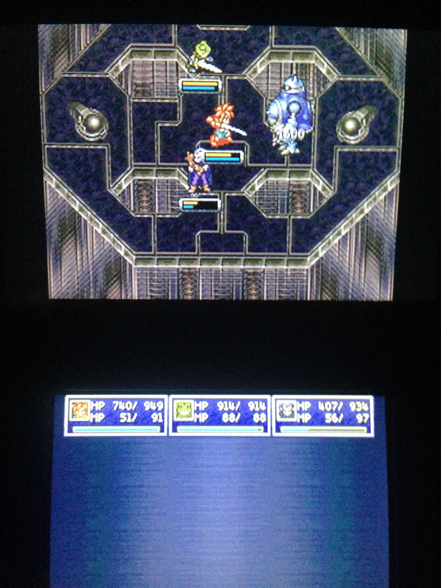
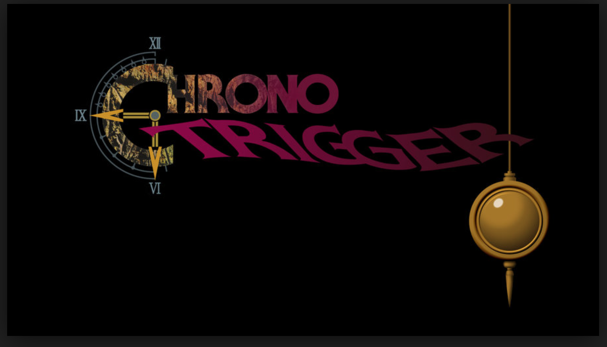
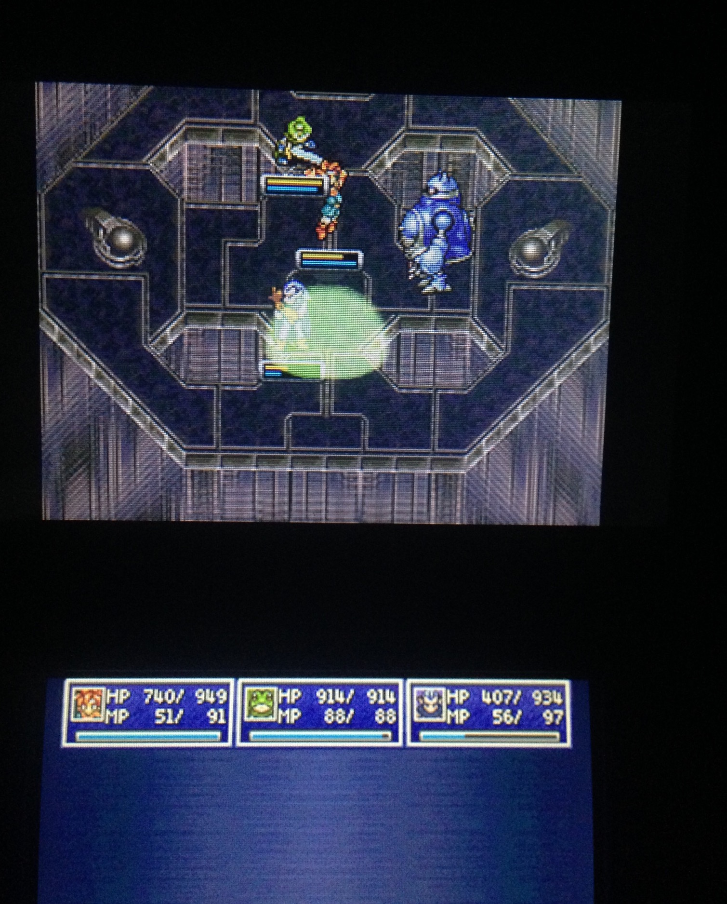
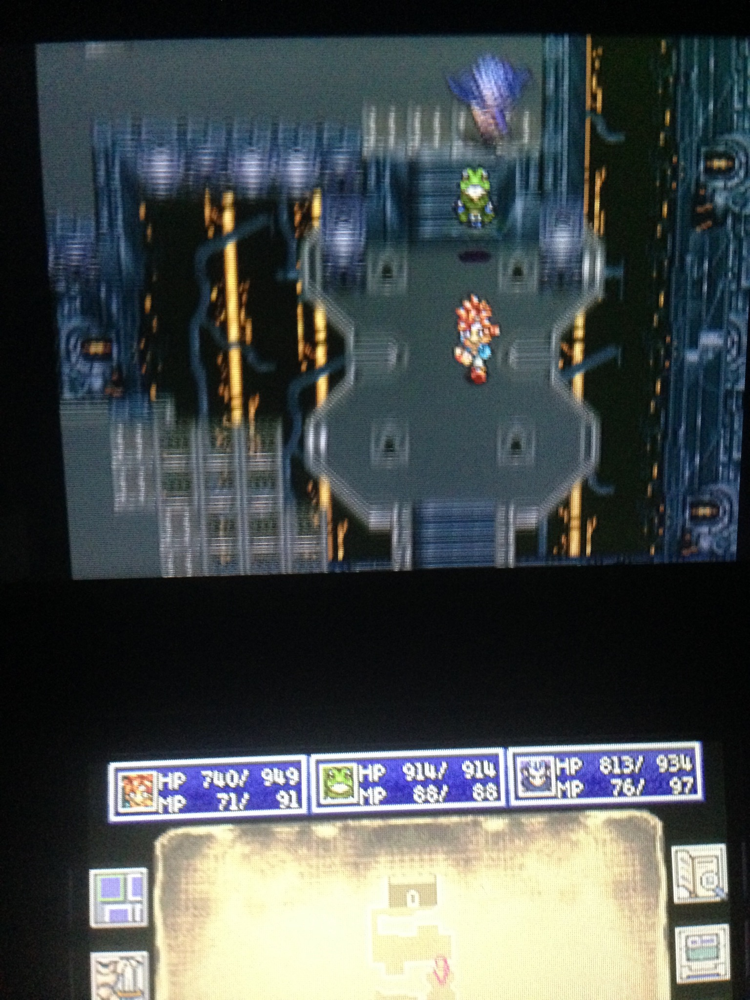
Super Smash Bros(Franchise)
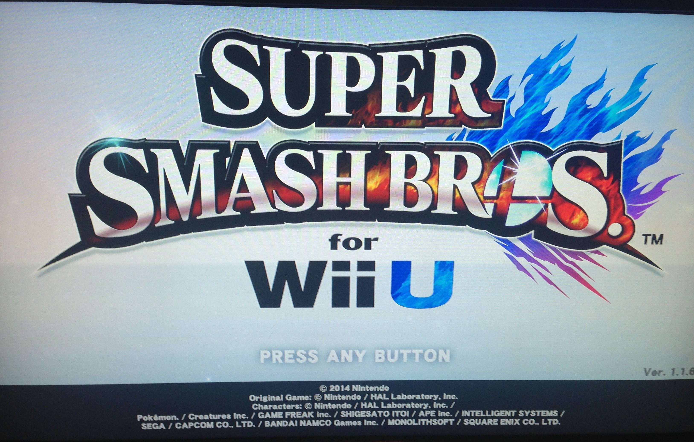
The Super Smash Bros franchise began in 1999 on the Nintendo 64 since then it has got 3 more entries Melee, Brawl, and U.
This is a multiplayer fighter that brings Nintendo character to fight for glory. The controls are simple and easy to get accustomed to.
The soundtracks are very good. However, if you need more help you can watch the in game tutorials. I highly recommend this if you have friends and family to play with.
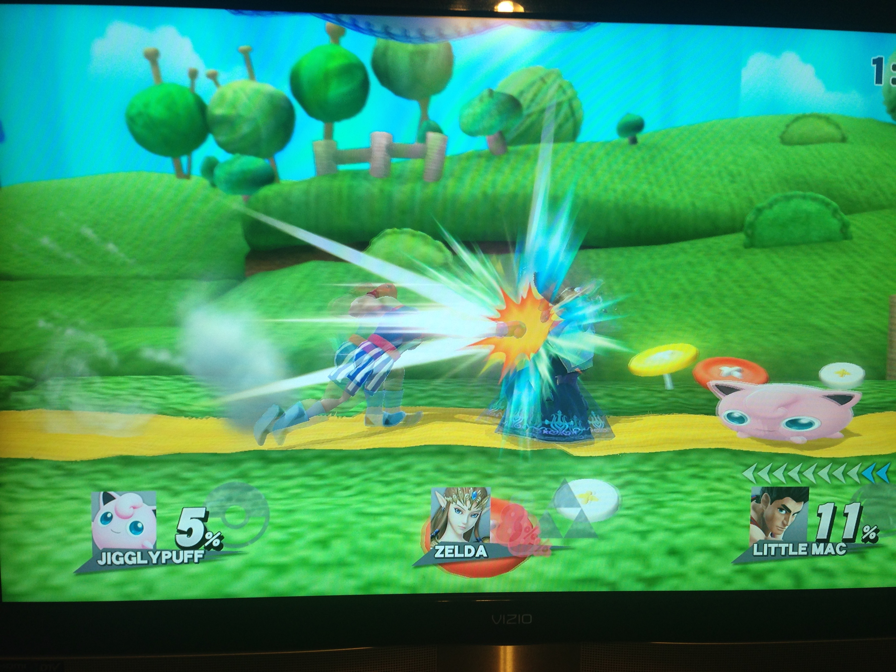
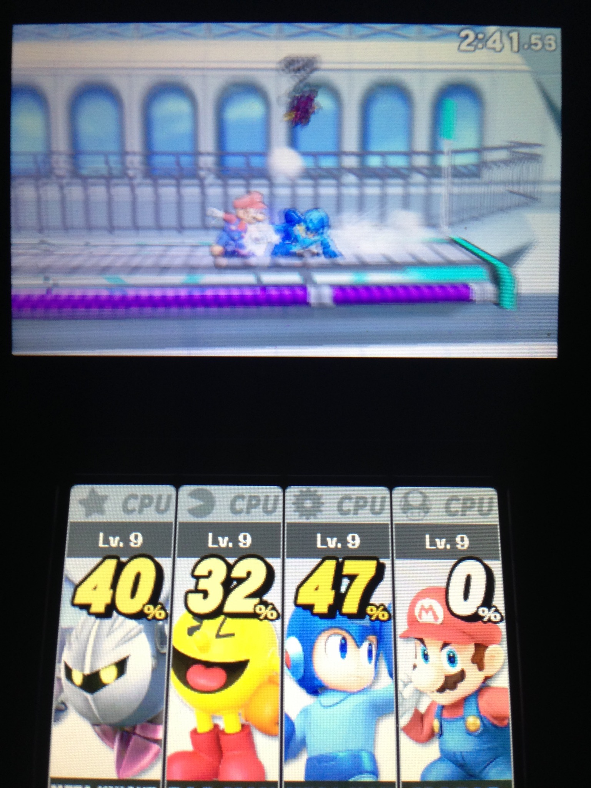
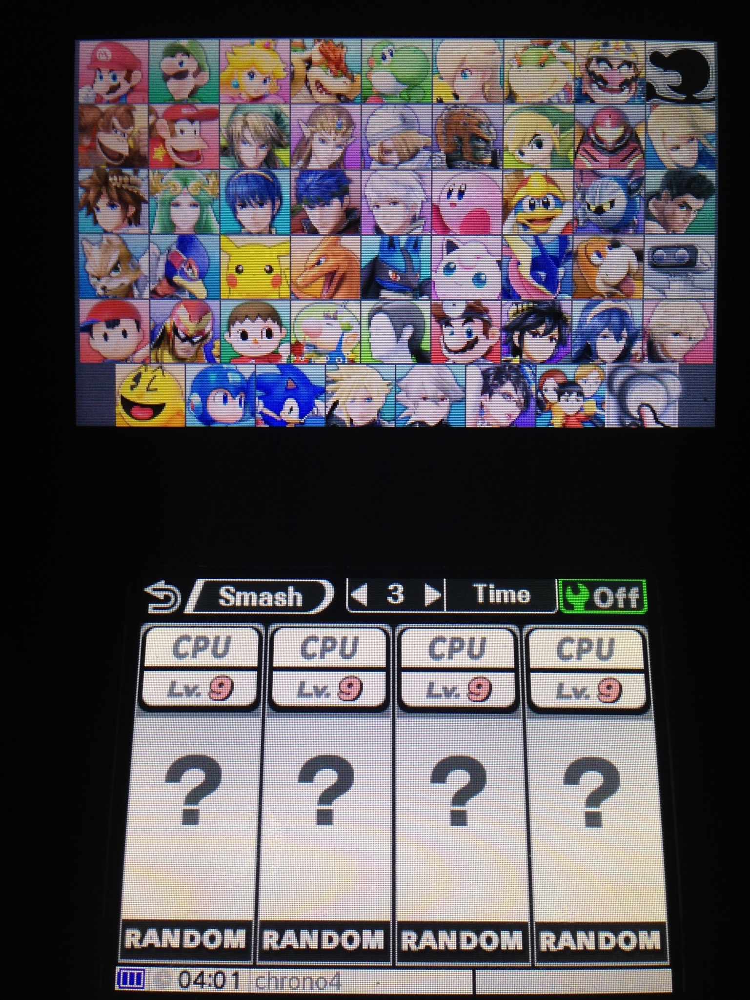
The Legend of Zelda A Link Between Worlds:
This game came out in 2014 for the Nintendo 3ds. It is a continuation of the Legend of Zelda. It’s an adventure puzzle game. It provides a nice balance of exploration and combat as well. It is a challenging game while being fair. This is a type of game that isn't for everyone. However if you like adventure games I think you should give this a shot.
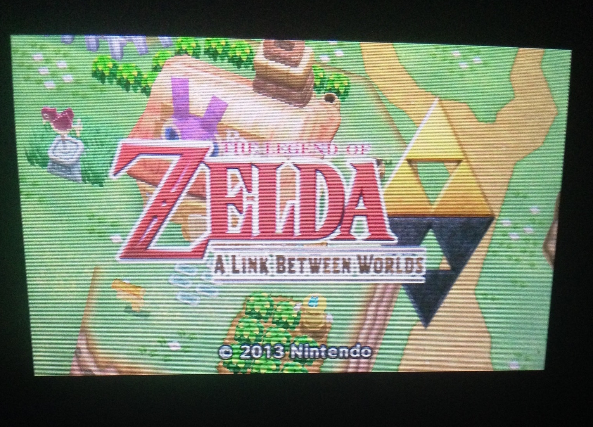
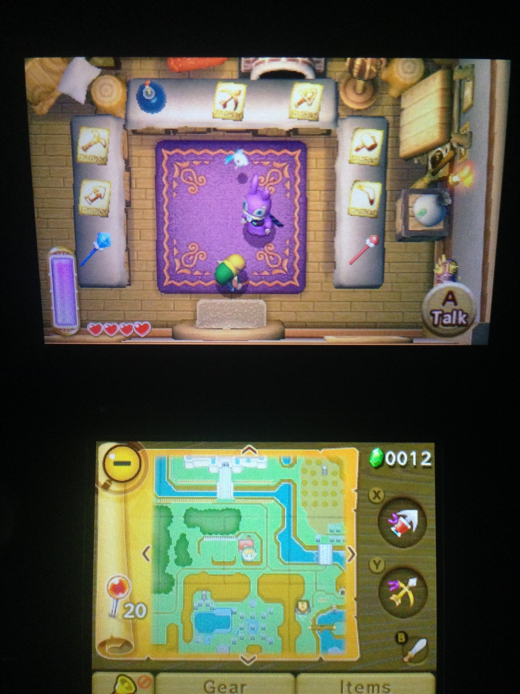
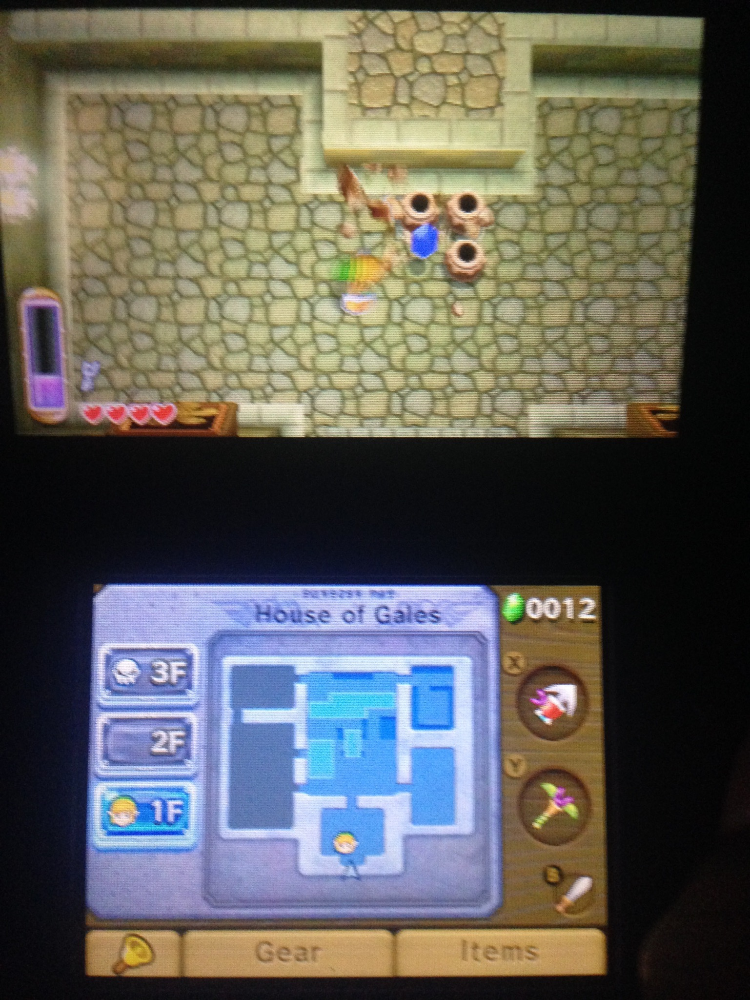